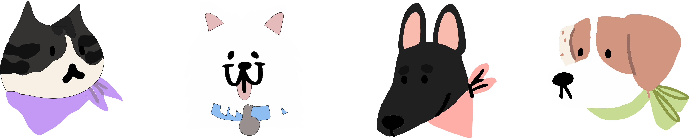

<!DOCTYPE html>
<html lang="es">
<head>
    <meta charset="UTF-8">
    <meta name="viewport" content="width=device-width, initial-scale=1.0">
    <title>Contador Pomodoro</title>
    <link rel="stylesheet" href="../css/estilos.css">
    <style>
        footer {
            background-color: rgba(0, 0, 0, 0.13);
            color: white;
            padding: 20px;
            text-align: center;
            width: 100%; /* Asegura que el footer ocupe todo el ancho */
            box-sizing: border-box; /* Incluye el relleno en el ancho total */
        }

        footer img {
            width: 150px; /* Cambia el tamaño de la imagen según sea necesario */
            height: auto; /* Mantiene la proporción de la imagen */
        }
    </style>
</head>
<body>
<footer>
    <p>© 2024 Desarrollado por Ana Paula Moyano.</p>
    
</footer>

</body>
</html>
